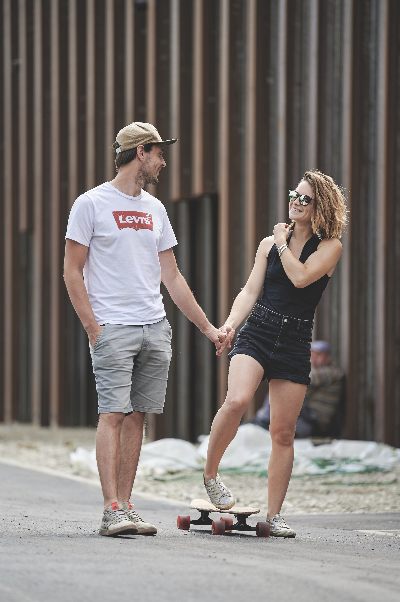
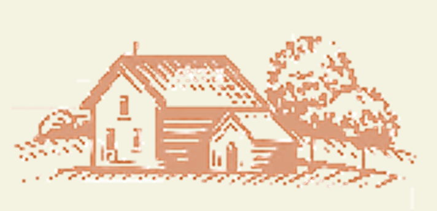
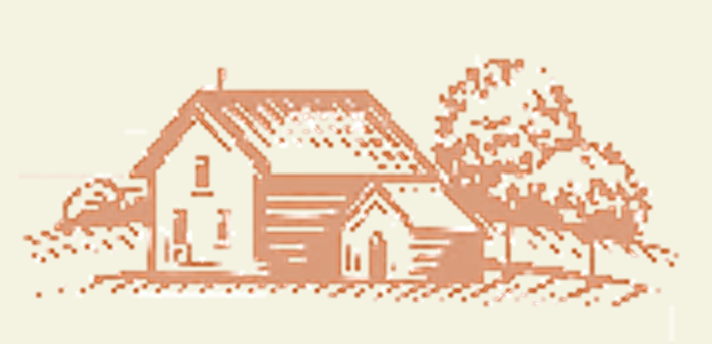
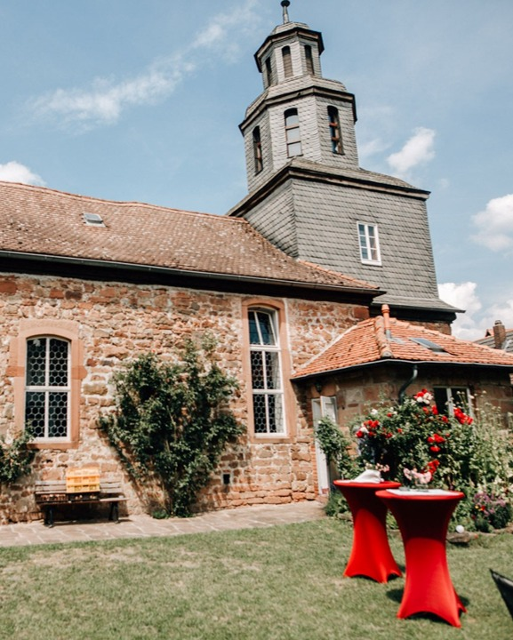
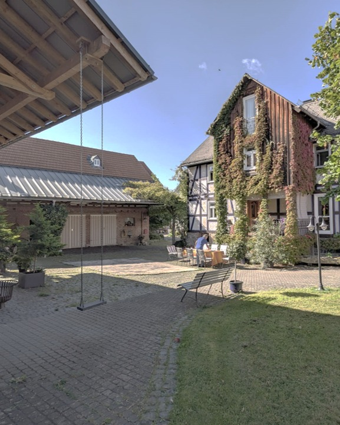

Wir Heiraten
und das ist ein Grund zum Feiern - am liebsten mit euch!

und das ist ein Grund zum Feiern - am liebsten mit euch!
Unsere standesamtliche Trauung findet in der alten Kirche in Niederweimar statt – die im 13. Jahrhundert gebaut wurde und heute vom Förder- und Kulturverein liebevoll als Standesamt betrieben wird. Wir freuen uns, diesen besonderen Moment in einem so besonderen Ort mit euch zu teilen. 
Für das anschließende Fest geht’s in die Horchstraße in Herzhausen – kurz Horche. Schon vor vielen Jahrzenten wurden dort Hochzeiten unter dem alten Kirschbaum gefeiert. Wir haben extra eine neue Treppe gebaut, die uns nicht nur beim Feiern, sondern auch später beim Umbau der Feierlocation zur Ferienwohnung gute Dienste leisten wird. Aber jetzt feiern wir erstmal! 
Gestaltet die Zeit zwischen der Trauung und dem Beginn des Hoffests um 16:00 Uhr gerne frei.
Wir selbst werden nach dem Sektempfang & Vesper am Seepark in Niederweimar einen Kaffee
trinken gehen. Ihr könnt euch gerne anschließen oder eine kurze Pause daheim machen. Falls ihr ins Hotel einchecken müsst wäre dafür hier ein guter Zeitpunkt.
Ihr wollt schon früher anreisen?
Am 1. Mai wird in Herzhausen traditionell gewandert oder eine Ausfahrt mit dem Traktor gemacht. Nachdem wir jetzt schon genug geplant haben, bleiben
wir unserer grundsätzlichen Spontanität in der Planung zumindest hier treu und lassen das mal auf uns zukommen.
Grundsätzlich sind wir in den Tagen vorher natürlich auch viel mit der Vorbereitung beschäftigt. :)
Sagt uns gern Bescheid, falls ihr plant, früher anzureisen.
Wenn ihr über Nacht bleiben wollt könnt ihr euch gerne eines der von uns vorreservierten Zimmer im Landhaus Werner buchen. Die Zimmer sind auf „Nispel“ reserviert.
Falls ihr weniger Privatsphäre braucht (oder euch wünscht :)) haben wir einige Betten und Couches bei Familie, Freunden und Verwandten zur Verfügung, die ihr gerne nutzen könnt. Schreibt uns dazu
einfach direkt, dann helfen wir euch etwas Passendes zu finden.
Wir haben zusätzlich über der Scheune einen kleinen Campingplatz eingerichtet, den ihr gerne nutzen könnt. Ein Waschbecken gibt es direkt dort, ein Badezimmer befindet sich
im Nachbarhaus. Details dazu folgen hier, kurz vor der Feier.
Nach der Party gibt es einen Shuttleservice, der euch gemütlich nach Hause oder zu eurer Unterkunft bringt.

Übrigens findet ihr die Fotos von unserer Hochzeit im Nachhinein auch hier auf der Website verlinkt :)
Beiträge, in denen sich Kati fühlt als wäre sie der einzige Gast in einer Comedy-Show mit Live-Publikum, wären ein bisschen schlimm für sie.
Falls ihr also einen Beitrag plant, meldet euch bitte bei Katis Trauzeugin Lisa. Sie behält den Überblick und koordiniert alle Beiträge. Hier nochmal ihre Nummer: +49 177 786 3987.
Lisa schreiben
Meldet euch bitte bis Ende Februar mit folgenden Infos bei uns:
🐻 Ob und wenn ja, mit wie vielen Leuten ihr kommt
🐻 Ob und wie ihr am liebsten Übernachten würdet
🐻 Ob ihr vegan/vegetarisch essen wollt.
Ihr könnt uns dazu ganz unkompliziert eine Nachricht per SMS oder auf WhatsApp schreiben.
Julian schreiben Kati schreiben